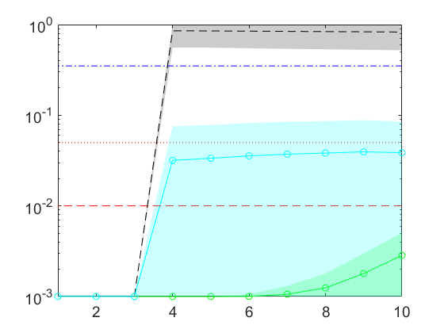

Second simulation example in Variable-Selection ANOVA Simultaneous Component Analysis. Bioinformatics. 2022
Camacho J, Vitale R, Morales-Jimenez D. and Gómez-Llorente C.
We simulate a single factor with two levels and 40 subjects for which 400 variables or responses (e.g., -omics features) are collected. We generate significant one-to-one relationships between the single factor and 3 variables out of the 400.
coded by: Jose Camacho (josecamacho@ugr.es) last modification: 30/Oct/2022
Copyright (C) 2022 University of Granada, Granada Copyright (C) 2022 Jose Camacho Paez
This program is free software: you can redistribute it and/or modify it under the terms of the GNU General Public License as published by the Free Software Foundation, either version 3 of the License, or (at your option) any later version.
This program is distributed in the hope that it will be useful, but WITHOUT ANY WARRANTY; without even the implied warranty of MERCHANTABILITY or FITNESS FOR A PARTICULAR PURPOSE. See the GNU General Public License for more details.
You should have received a copy of the GNU General Public License along with this program. If not, see http://www.gnu.org/licenses/.
Contents
Simulation
clear n_obs = 40; % number of individuals n_vars = 400; % number of responses or variables rep = 1000; % number of repetitions of the simulation close all p1 = zeros(rep,1); p2 = zeros(rep,n_vars); p2b = zeros(rep,n_vars); p3 = zeros(rep,n_vars); p22 = zeros(rep,n_vars); p22b = zeros(rep,n_vars); p33 = zeros(rep,n_vars); t1 = zeros(rep,1); t2 = zeros(rep,1); t2b = zeros(rep,1); t3 = zeros(rep,1); parfor i= 1:rep % Main loop class = sign(randn(n_obs,1)); % Random association of individuals to the class X = [randn(n_obs,3) simuleMV(n_obs,n_vars-3,7)]; % Variables from 4 to 400 are independent to the class, and obtained with simuleMV with a medium correlation level X(:,1:3) = X(:,1:3) + 5*(class); % Introduction of a bias cosistent with the class. As a result, the first three variables present one-to-one conection with the factor tic s = rng(i); [~,parglmo] = parglm(X,class); % general linear model (GLM) factorization and (ASCA type) multivariate significance testing t1(i) = toc; tic rng(s); [~,parglmoVS] = parglmVS(X,class); % GLM factorization and (VASCA-type) incremental multivariate significance testing t2(i) = toc; tic rng(s); [~,parglmoMC] = parglmMC(X,class); % GLM factorization and Benjamini-Hochberg (BH) univariate significant testing t3(i) = toc; p1(i) = parglmo.p; % Sorted p-values p2(i,:) = parglmoVS.p(parglmoVS.ord_factors); p3(i,:) = parglmoMC.p(parglmoMC.ord_factors); % Unsorted p-values p22(i,:) = parglmoVS.p; p33(i,:) = parglmoMC.p; tic p2bb = p22(i,:); ind = find(p22(i,:)<0.01); % VASCA + bootstrapping if ~isempty(ind) [~,parglmo] = parglm(X(:,ind),class); ascao = asca(parglmo); bpvals = pbootasca(X(:,ind), class, ascao, 1, 1000, 0); p2bb(ind) = bpvals; end % Unsorted p22b(i,:) = p2bb; % Sorted p2b(i,:) = p2bb(parglmoVS.ord_factors); t2b(i) = toc; end disp(sprintf('Average time for ASCA: %d seconds',mean(t1))) disp(sprintf('Average time for VASCA: %d seconds',mean(t2))) disp(sprintf('Average time for VASCA + bootstrap: %d seconds',mean(t2b))) disp(sprintf('Average time for FDR: %d seconds',mean(t3))) save example2
Average time for ASCA: 1.258909e-01 seconds Average time for VASCA: 2.543383e+00 seconds Average time for VASCA + bootstrap: 2.733498e+01 seconds Average time for FDR: 5.301838e+01 seconds
Plot Figures: using sorted p-values
load example2 minT = 1e-3; maxT = 1; h = figure; hold on p1(find(p1(:)<minT)) = minT; p1(find(p1(:)>maxT)) = maxT; p2(find(p2(:)<minT)) = minT; p2(find(p2(:)>maxT)) = maxT; p2b(find(p2b(:)<minT)) = minT; p2b(find(p2b(:)>maxT)) = maxT; p3(find(p3(:)<minT)) = minT; p3(find(p3(:)>maxT)) = maxT; mp3 = mean(p3); plot(mp3,'k--') plot([1 n_vars],[mean(p1) mean(p1)],'b-.') mp2 = mean(p2); plot(mp2,'g-o'); mp2b = mean(p2b); plot(mp2b,'c-o') plot([0 n_vars],[0.05 0.05],'r:') plot([0 n_vars],[0.01 0.01],'r--') xr = []; yr = []; for i=1:size(p3,2) xr = [xr;i*ones(1,2)]; yr = [yr;[mean(p3(:,i))-std(p3(:,i)) mean(p3(:,i))+std(p3(:,i))]]; end yr(find(yr<minT)) = minT; yr(find(yr>maxT)) = maxT; fill([xr(:,1);flipud(xr(:,2))],[yr(:,1);flipud(yr(:,2))],'k','FaceAlpha',0.2,'EdgeColor','none'); xr = []; yr = []; for i=1:size(p2,2) xr = [xr;i*ones(1,2)]; yr = [yr;[mean(p2(:,i))-std(p2(:,i)) mean(p2(:,i))+std(p2(:,i))]]; end yr(find(yr<minT)) = minT; yr(find(yr>maxT)) = maxT; fill([xr(:,1);flipud(xr(:,2))],[yr(:,1);flipud(yr(:,2))],'g','FaceAlpha',0.2,'EdgeColor','none'); xr = []; yr = []; for i=1:size(p2,2) xr = [xr;i*ones(1,2)]; yr = [yr;[mean(p2b(:,i))-std(p2b(:,i)) mean(p2b(:,i))+std(p2b(:,i))]]; end yr(find(yr<minT)) = minT; yr(find(yr>maxT)) = maxT; fill([xr(:,1);flipud(xr(:,2))],[yr(:,1);flipud(yr(:,2))],'c','FaceAlpha',0.2,'EdgeColor','none'); plot([1 n_vars],[mean(p1) mean(p1)],'b-.') a=get(h,'CurrentAxes'); set(a,'FontSize',14) set(a,'YScale','log') ylabel('p-values','FontSize',18) xlabel('Variables in selected order','FontSize',18) legend('FDR','ASCA','VASCA','VASCA + bootstrapping','\alpha=0.05','\alpha=0.01','Location','southeast') saveas(gcf,'Fig/example2'); saveas(gcf,'Fig/example2.eps','epsc');
Plot zoom
set(a,'Box','on') ylabel('') xlabel('') axis([1 10 1e-3 1]) legend HIDE saveas(gcf,'Fig/example2_100zoom'); saveas(gcf,'Fig/example2_100zoom.eps','epsc');
Compute table with statistics: using un-sorted p-values
load example2 name={'VASCA','VASCA + bootstrap','FDR'}'; p2bb = p22(:,:)<0.01; % VASCA p2_1var = sum(sum(p2bb(:,1:3),2)>0)/rep; p2_2var = sum(sum(p2bb(:,1:3),2)>1)/rep; p2_3var = sum(sum(p2bb(:,1:3),2)>2)/rep; p2_FPR = sum(sum(p2bb(:,4:end)))/(rep*(n_vars-3)); p2_FDR = sum(sum(p2bb(:,4:end)))/(sum(sum(p2bb))); p2 = [p2_1var p2_2var p2_3var p2_FPR p2_FDR]; p2bb = p22b(:,:)<0.01; % VASCA + bootstrap p2b_1var = sum(sum(p2bb(:,1:3),2)>0)/rep; p2b_2var = sum(sum(p2bb(:,1:3),2)>1)/rep; p2b_3var = sum(sum(p2bb(:,1:3),2)>2)/rep; p2b_FPR = sum(sum(p2bb(:,4:end)))/(rep*(n_vars-3)); p2b_FDR = sum(sum(p2bb(:,4:end)))/(sum(sum(p2bb))); p2b = [p2b_1var p2b_2var p2b_3var p2b_FPR p2b_FDR]; p3b = p33(:,:)<0.01; % FDR p3_1var = sum(sum(p3b(:,1:3),2)>0)/rep; p3_2var = sum(sum(p3b(:,1:3),2)>1)/rep; p3_3var = sum(sum(p3b(:,1:3),2)>2)/rep; p3_FPR = sum(sum(p3b(:,4:end)))/(rep*(n_vars-3)); p3_FDR = sum(sum(p3b(:,4:end)))/sum(sum(p3b)); p3 = [p3_1var p3_2var p3_3var p3_FPR p3_FDR]; X = [p2;p2b;p3]; T = table(name, X(:,1), X(:,2), X(:,3), X(:,4), X(:,5), 'VariableNames', {'Method','SigVar1','SigVars2','SigVars3','FPR','FDR'})
T =
Method SigVar1 SigVars2 SigVars3 FPR FDR
___________________ _______ ________ ________ __________ ________
'VASCA' 1 1 1 0.062048 0.89143
'VASCA + bootstrap' 1 1 1 0.023469 0.75643
'FDR' 1 1 1 0.00047103 0.058676
ASCA with 6 variables selected
load example2 s = rng(0); class = sign(randn(n_obs,1)); % Random association of individuals to the class X = [randn(n_obs,3) simuleMV(n_obs,n_vars-3,7)]; % Variables from 4 to 400 are independent to the class, and obtained with simuleMV with a medium correlation level X(:,1:3) = X(:,1:3) + 5*class; % Introduction of a bias cosistent with the class. As a result, the first three variables present one-to-one conection with the factor [~,parglmoVS] = parglmVS(X,class,[],[],[],0); % GLM factorization and (VASCA-type) incremental multivariate significance testing selvar = parglmoVS.ord_factors(1:6); [~,parglmo] = parglm(X(:,selvar),class); % No variables selection ascao = asca(parglmo); scores(ascao.factors{1},[],[],[],[],ascao.design(:,1)); saveas(gcf,'Fig/example2_scores'); saveas(gcf,'Fig/example2_scores.eps','epsc'); loadings(ascao.factors{1}); saveas(gcf,'Fig/example2_loadings'); saveas(gcf,'Fig/example2_loadings.eps','epsc'); pbootasca(X(:,selvar),class,ascao,1); a=get(gcf,'CurrentAxes'); set(a,'FontSize',14) saveas(gcf,'Fig/example2_loadboot'); saveas(gcf,'Fig/example2_loadboot.eps','epsc');